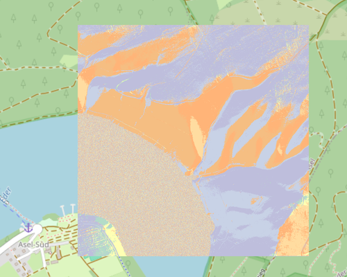

Hangexposition
Eine detaillierte Hangexpositionskarte ist ein wertvolles Werkzeug für vielfältige Analysen und Planungen. Sie liefert entscheidende Informationen über die Sonneneinstrahlung sowie die Temperatur- und Feuchtigkeitsverhältnisse. Zu den wichtigsten Anwendungsbereichen gehören:
- Land- und Forstwirtschaft: Die Ausrichtung eines Hanges ist entscheidend für die Auswahl geeigneter Pflanzen und Anbaumethoden (z. B. Weinbau an Südhängen) und die Beurteilung der Trockenheitstoleranz von Wäldern.
- Hydrologie: Die Hangexposition beeinflusst den Wasserabfluss, Erosionsprozesse und die Schneeschmelze, was für das Wassermanagement von Bedeutung ist.
- Naturgefahren: Sie ist ein kritischer Faktor bei der Bewertung von Lawinengefahr (Nordhänge), der Ausbreitung von Waldbränden (Südhänge) und der Stabilität von Permafrostböden.
- Bauplanung: Die Karte ermöglicht eine optimierte Ausrichtung von Gebäuden zur passiven Solarenergienutzung und zur Steigerung der Energieeffizienz.
- Ökologie: Die Exposition bestimmt das Mikroklima und damit die Verteilung von Tier- und Pflanzenarten sowie die Ausbildung spezifischer Lebensräume.
- Erneuerbare Energien: Sie ist essenziell für die Standortwahl und Ausrichtung von Photovoltaikanlagen, um den Energieertrag zu maximieren.
Winkelbereich zu Farbe
Aus den Höheninformationen werden Hangexpositionswinkel in Dezimalgrad (mit Nachkommastellen) errechnet. Es werden Winkel zwischen 0° und <360° erwartet. Zusätzlich definiert der Benutzer eine Farbsteuerdatei für Winkelbereiche und Farben. Welche Farben und Winkelbereiche sinnvoll sind, ist vom jeweiligen Anwendungsfall abhängig. Soll ein Winkelbereich gar nicht dargestellt werden, wählt man eine volltransparente Farbe.
Beispiel
| Winkel° | RGBA | Farbe | Farbname | Bemerkung |
|---|---|---|---|---|
| 0 | 190 190 220 255 |
|
Helles Lavendel | Nord, von 0° bis <22.5°. |
| 22.5 | 180 220 200 255 |
|
Helles Mintgrün | Nordost, von 22.5° bis <67.5°. |
| 67.5 | 255 255 180 255 |
|
Hellgelb | Ost, von 67.5° bis <112.5°. |
| 112.5 | 255 220 160 255 |
|
Helles Orange | Südost, von 112.5° bis <157.5°. |
| 157.5 | 255 180 120 255 |
|
Helles Lachsrosa | Süd, von 157.5° bis <202.5°. |
| 202.5 | 245 190 130 255 |
|
Helles Sandbraun | Südwest, von 202.5° bis <247.5°. |
| 247.5 | 200 210 230 255 |
|
Helles Blaugrau | West, von 247.5° bis <292.5°. |
| 292.5 | 190 190 220 255 |
|
Helles Lavendel | Nordwest, von 292.5° bis <337.5°. |
| 337.5 | 190 190 220 255 |
|
Helles Lavendel | Nord, von 337.5° bis <360°. |
| 360 | 190 190 220 255 |
|
Helles Lavendel | Ab 360° und darüber hinaus. |
| nv | 0 0 0 0 |
|
Transparent | Sonderbehandlung für "No Value". |
Die Himmelsrichtungen werden in einem 360°-Kreis angegeben, wobei Norden den Referenzpunkt bei 0° bildet und die Gradzahlen im Uhrzeigersinn ansteigen. Die Haupthimmelsrichtungen und ihre Winkelbereiche (in 45°-Schritten) sind:
- Nord (N): 337.5° bis 22.5° (Mitte 0°)
- Nordost (NO): 22.5° bis 67.5° (Mitte 45°)
- Ost (O): 67.5° bis 112.5° (Mitte 90°)
- Südost (SO): 112.5° bis 157.5° (Mitte 135°)
- Süd (S): 157.5° bis 202.5° (Mitte 180°)
- Südwest (SW): 202.5° bis 247.5° (Mitte 225°)
- West (W): 247.5° bis 292.5° (Mitte 270°)
- Nordwest (NW): 292.5° bis 337.5° (Mitte 315°)
Für eine feinere Unterteilung gibt es auch Zwischenhimmelsrichtungen wie Nordnordost (NNO) bei 22.5°, Ostnordost (ONO) bei 67.5°, usw., die jeweils in 22.5°-Schritten voneinander abweichen.
Schummerung versus Hangexposition

Schummerung für eine Datenkachel am Edersee (Hessen).
Hangexposition für eine Datenkachel am Edersee (Hessen).
Farbkonzept
Himmelsrichtungen und assoziierte Farben:
- Norden (0°/360°): Kühle Farben wie Blau oder Dunkelblau. Diese Assoziation rührt oft daher, dass Nordhänge weniger Sonnenlicht erhalten und kühler sind.
- Osten (90°): Frische Farben wie Grün oder Türkis. Assoziiert mit der Morgensonne.
- Süden (180°): Warme Farben wie Gelb, Orange oder Hellbraun. Diese Hänge erhalten die meiste Sonneneinstrahlung.
- Westen (270°): Kräftige Farben wie Rot oder Magenta. Assoziiert mit der Abendsonne.
- Zwischenhimmelsrichtungen: Farbverläufe zwischen den Hauptrichtungen.
Flache Bereiche:
- Eine neutrale Farbe wie Grau oder Weiß, um anzuzeigen, dass keine eindeutige Himmelsrichtung vorliegt.
Hänge
Je nach Exposition ist der Einfluss der Sonneneinstrahlung auf einen Hang unterschiedlich:
- Schatt-Hänge (Nord, Nordwest, Nordost): Bekommen wenig bis gar keine direkte Sonne.
- Sonnen-Hänge (Süd, Südwest, Südost): Starke Sonneneinstrahlung.
- Ost-Hänge: Bekommen die Morgensonne.
- West-Hänge: Bekommen die Nachmittagssonne.
Dienst Kolorierung
Über den Dienst Kolorierung können Farbsteuerdateien definiert, eingelesen, editiert und gespeichert werden.